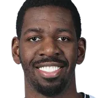

His best final NBA finish was #8 of 30, with the 2011-12 Philadelphia 76ers. In his 1,050 games for 4 teams over 15 seasons they went 444–606 (42.3%), −162 games under .500, with an average final finish of 20.9. The biggest one-season rise in his career: the Orlando Magic went from #26 in 2017-18 to #14 in 2018-19.
Jump to: Record by opponent · Season by season · Teammate help
Compare Nikola Vucevic with…
Suggested, same era and similar teammate help:

Final NBA finish, season by season
Title Finals Other playoffs Missed playoffs. #1 = champion; the dashed line is last place that season. Each point opens that season's final standings.
All 30 teams ranked in 2011-12, his best finish (#8)Teammate help
 DeMar DeRozan5.02 seasons
DeMar DeRozan5.02 seasons Alex Caruso1.52 seasons
Alex Caruso1.52 seasons Andre Iguodala1.01 season
Andre Iguodala1.01 season
Seasons with help 0.0 to 0.5 (12): best finish #14 of 30, 2018-19, worst #30 of 30, 2012-13.
Career
Career records (W–L, W − L, with and without) include 2026-27 games through Nov. 23, 2026; season counts and finishes are through 2025-26. Each card opens its board in the same scope. How we count.

Latest completed seasons
2026-27 so far
Games through Nov. 23, 2026, the last game in the nightly data. These games are already in his career records above (W–L, win %, W − L, with and without, all marked "incl. 2026-27"). Season counts, final finishes and teammate help use completed seasons through 2025-26; 2026-27 joins them when the season ends.
| Team | His games | With him | Without him | Gap | On/off per 100 | Started / bench | Close games |
|---|---|---|---|---|---|---|---|
| 14 | 6–8 42.9% | 1–1 50.0% | −7.1 | −22.3 | N/A / 6–8 | N/A |
Season by season
Newest first; every header sorts. Final NBA finish is the team's rank among all teams that season (#1 = champion) and opens that season's standings. "Without him" uses the team-season window; the span line counts only the games between his first and last game for the team. The 2026-27 (to date) row counts games through Nov. 23, 2026; its final finish and playoffs are in progress.
| 2026-27 (to date) | In progress | 7–9 43.8% | In progress | 14 of 16 | 6–8 42.9% | 1–1 50.0%span: 1–1, gap −7.1 | −7.1 | |
| 2025-26 | #22 of 30 | 31–51 37.8% | Missed playoffs | 48 of 82 | 23–25 47.9% | 1–3 25.0%span: 1–1, gap −2.1 | +22.9 | |
| 2025-26 | #9 of 30 | 56–26 68.3% | Lost 1st round 3–4 | 16 of 82 | 12–4 75.0% | 13–4 76.5%span: 10–4, gap +3.6 | −1.5 | |
| 2024-25 | #19 of 30 | 39–43 47.6% | Missed playoffs | 73 of 82 | 34–39 46.6% | 5–4 55.6%span: 5–4, gap −9.0 | −9.0 | |
| 2023-24 | #19 of 30 | 39–43 47.6% | Lost in play-in | 76 of 82 | 36–40 47.4% | 3–3 50.0%span: 3–3, gap −2.6 | −2.6 | |
| 2022-23 | #19 of 30 | 40–42 48.8% | Lost in play-in | 82 of 82 | 40–42 48.8% | N/A | N/A | |
| 2021-22 | #12 of 30 | 46–36 56.1% | Lost 1st round 1–4 | 73 of 82 | 41–32 56.2% | 5–4 55.6%span: 4–4, gap +6.2 | +0.6 | |
| 2020-21 | #28 of 30 | 21–51 29.2% | Missed playoffs | 44 of 72 | 15–29 34.1% | 0–1 0.0%span: N/A, gap N/A | +34.1 | |
| 2020-21 | #21 of 30 | 31–41 43.1% | Missed playoffs | 26 of 72 | 11–15 42.3% | 1–2 33.3%span: 0–2, gap +42.3 | +9.0 | |
| 2019-20 | #16 of 30 | 33–40 45.2% | Lost 1st round 1–4 | 62 of 73 | 28–34 45.2% | 5–6 45.5%span: 5–6, gap −0.3 | −0.3 | |
| 2018-19 | #14 of 30 | 42–40 51.2% | Lost 1st round 1–4 | 80 of 82 | 41–39 51.2% | 1–1 50.0%span: 0–1, gap +51.2 | +1.2 | |
| 2017-18 | #26 of 30 | 25–57 30.5% | Missed playoffs | 57 of 82 | 17–40 29.8% | 8–17 32.0%span: 8–17, gap −2.2 | −2.2 | |
| 2016-17 | #26 of 30 | 29–53 35.4% | Missed playoffs | 75 of 82 | 27–48 36.0% | 2–5 28.6%span: 2–5, gap +7.4 | +7.4 | |
| 2015-16 | #20 of 30 | 35–47 42.7% | Missed playoffs | 65 of 82 | 28–37 43.1% | 7–10 41.2%span: 7–10, gap +1.9 | +1.9 | |
| 2014-15 | #26 of 30 | 25–57 30.5% | Missed playoffs | 74 of 82 | 21–53 28.4% | 4–4 50.0%span: 4–4, gap −21.6 | −21.6 | |
| 2013-14 | #28 of 30 | 23–59 28.0% | Missed playoffs | 57 of 82 | 19–38 33.3% | 4–21 16.0%span: 2–16, gap +22.2 | +17.3 | |
| 2012-13 | #30 of 30 | 20–62 24.4% | Missed playoffs | 77 of 82 | 19–58 24.7% | 1–4 20.0%span: 1–4, gap +4.7 | +4.7 | |
| 2011-12 | #8 of 30 | 35–31 53.0% | Lost conf semis 3–4 | 51 of 66 | 26–25 51.0% | 9–6 60.0%span: 9–5, gap −13.3 | −9.0 |
On/off, starts and close games
From the lineup data, 1996-97 on, incl. 2026-27 through Nov. 23, 2026. On/off is net points per 100 possessions with him on the floor minus off, a different unit from the win-rate gaps. Started and off the bench are team records in those games; close games are those within 5 points in the last 5 minutes with him on the floor.
| 2026-27 (to date) | −22.3 | N/A | 6–8 42.9% | N/A | |
| 2025-26 | −3.8 | 23–25 47.9% | N/A | 15–12 55.6% | |
| 2025-26 | −0.8 | 1–0 100.0% | 11–4 73.3% | 1–1 50.0% | |
| 2024-25 | −1.9 | 33–39 45.8% | 1–0 100.0% | 13–16 44.8% | |
| 2023-24 | −8.3 | 34–40 45.9% | 2–0 100.0% | 25–17 59.5% | |
| 2022-23 | −7.7 | 40–42 48.8% | N/A | 16–23 41.0% | |
| 2021-22 | −5.1 | 41–32 56.2% | N/A | 22–14 61.1% | |
| 2020-21 | −8.0 | 15–29 34.1% | N/A | 9–12 42.9% | |
| 2020-21 | −8.1 | 11–15 42.3% | N/A | 3–7 30.0% | |
| 2019-20 | +6.0 | 28–34 45.2% | N/A | 12–17 41.4% | |
| 2018-19 | +8.4 | 41–39 51.2% | N/A | 23–24 48.9% | |
| 2017-18 | +10.2 | 17–40 29.8% | N/A | 9–15 37.5% | |
| 2016-17 | +5.8 | 18–37 32.7% | 9–11 45.0% | 16–17 48.5% | |
| 2015-16 | −0.8 | 25–35 41.7% | 3–2 60.0% | 13–19 40.6% | |
| 2014-15 | +0.3 | 21–53 28.4% | N/A | 17–27 38.6% | |
| 2013-14 | −4.8 | 19–38 33.3% | N/A | 10–21 32.3% | |
| 2012-13 | −2.4 | 19–58 24.7% | N/A | 9–23 28.1% | |
| 2011-12 | −4.0 | 7–8 46.7% | 19–17 52.8% | 3–2 60.0% |
Teammate help by season
Two separate numbers per season, each with every teammate that adds to it. Help this season = Teammates Score points for honors won that season by teammates who shared a game with him. Help coming in = the same teammates' honors from the season before. How help works.
- 2026-27
 OrlandoHelp this season: pending (honors are awarded after the season)
OrlandoHelp this season: pending (honors are awarded after the season)Help coming in (2025-26 honors of teammates he has played with so far): 0
- 2025-26
 ChicagoHelp this season: 0, no honored teammate partial
ChicagoHelp this season: 0, no honored teammate partialMore: help coming in
Help coming in (teammates' honors the season before): 0.125+ = 0.125 Matas Buzelis
- 2025-26
 Boston
Boston
 Jaylen Brown All-NBA 2ndAll-Star413 g
Jaylen Brown All-NBA 2ndAll-Star413 g Derrick White All-Def 1st116 g
Derrick White All-Def 1st116 g
Help this season: 5 = 4 Jaylen Brown + 1 Derrick White
More: help coming in and other teammates
Help coming in (teammates' honors the season before): 6.5 = 5 Jayson Tatum + 1 Jaylen Brown + 0.5 Payton Pritchard
Other teammates (no honors that season): Baylor Scheierman 16 g, Payton Pritchard 16 g, Sam Hauser 15 g, Neemias Queta 15 g, Hugo Gonzalez 14 g, Jordan Walsh 14 g, Ron Harper Jr 12 g, Luka Garza 12 g, Amari Williams 4 g, Jayson Tatum 4 g, John Tonje 3 g, Dalano Banton 3 g, Max Shulga 2 g
- 2024-25Chicago
 Matas Buzelis All-Rookie 2nd0.12571 g
Matas Buzelis All-Rookie 2nd0.12571 g
Help this season: 0.125 = 0.125 Matas Buzelis
More: help coming in and other teammates
Help coming in (teammates' honors the season before): 0
Other teammates (no honors that season): Julian Phillips 70 g, Coby White 66 g, Dalen Terry 65 g, Josh Giddey 63 g, Patrick Williams 61 g, Jalen Smith 57 g, Talen Horton-Tucker 51 g, Ayo Dosunmu 44 g, Zach LaVine 41 g, Jevon Carter 32 g, Lonzo Ball 31 g, Kevin Huerter 21 g, Zach Collins 20 g, Chris Duarte 17 g and 6 more
- 2023-24Chicago
Alex Caruso All-Def 2nd0.566 g
Help this season: 0.5 = 0.5 Alex Caruso
More: help coming in and other teammates
Help coming in (teammates' honors the season before): 2 = 1 DeMar DeRozan + 1 Alex Caruso
Other teammates (no honors that season): Andre Drummond 74 g, DeMar DeRozan 74 g, Coby White 73 g, Ayo Dosunmu 71 g, Jevon Carter 66 g, Dalen Terry 53 g, Torrey Craig 52 g, Patrick Williams 38 g, Julian Phillips 36 g, Terry Taylor 26 g, Zach LaVine 25 g, Onuralp Bitim 22 g, Javonte Green 8 g, Adama Sanogo 5 g and 2 more
- 2022-23Chicago
DeMar DeRozan All-Star174 gAlex Caruso All-Def 1st167 g
Help this season: 2 = 1 DeMar DeRozan + 1 Alex Caruso
More: help coming in and other teammates
Help coming in (teammates' honors the season before): 5.125 = 4 DeMar DeRozan + 1 Zach LaVine + 0.125 Ayo Dosunmu
Other teammates (no honors that season): Patrick Williams 82 g, Ayo Dosunmu 80 g, Zach LaVine 77 g, Coby White 74 g, Andre Drummond 67 g, Derrick Jones 64 g, Goran Dragic 51 g, Dalen Terry 38 g, Javonte Green 32 g, Patrick Beverley 22 g, Tony Bradley 12 g, Carlik Jones 7 g, Marko Simonovic 7 g, Malcolm Hill 5 g and 1 more
- 2021-22Chicago
DeMar DeRozan All-NBA 2ndAll-Star468 g
 Zach LaVine All-Star159 g
Zach LaVine All-Star159 g Ayo Dosunmu All-Rookie 2nd0.12568 g
Ayo Dosunmu All-Rookie 2nd0.12568 g
Help this season: 5.125 = 4 DeMar DeRozan + 1 Zach LaVine + 0.125 Ayo Dosunmu
More: help coming in and other teammates
Help coming in (teammates' honors the season before): 1.125 = 1 Zach LaVine + 0.125 Patrick Williams
Other teammates (no honors that season): Troy Brown 60 g, Javonte Green 56 g, Coby White 55 g, Tony Bradley 46 g, Derrick Jones 42 g, Matt Thomas 37 g, Alex Caruso 35 g, Lonzo Ball 28 g, Tristan Thompson 21 g, Tyler Cook 18 g, Alfonzo McKinnie 17 g, Patrick Williams 16 g, Malcolm Hill 15 g, Alize Johnson 11 g and 4 more
- 2020-21OrlandoHelp this season: 0, no honored teammate
- 2020-21Chicago
Zach LaVine All-Star115 g
 Patrick Williams All-Rookie 2nd0.12526 g
Patrick Williams All-Rookie 2nd0.12526 g
Help this season: 1.125 = 1 Zach LaVine + 0.125 Patrick Williams
More: help coming in and other teammates
Help coming in (teammates' honors the season before): 0.125 = 0.125 Coby White
Other teammates (no honors that season): Thaddeus Young 26 g, Lauri Markkanen 25 g, Tomas Satoransky 24 g, Coby White 23 g, Daniel Theis 21 g, Denzel Valentine 20 g, Garrett Temple 18 g, Ryan Arcidiacono 15 g, Javonte Green 14 g, Troy Brown 13 g, Cristiano Felicio 10 g, Devon Dotson 9 g, Adam Mokoka 5 g, Al-Farouq Aminu 4 g
- 2019-20OrlandoHelp this season: 0, no honored teammate
- 2018-19OrlandoHelp this season: 0, no honored teammate
- 2017-18OrlandoHelp this season: 0, no honored teammate
- 2016-17OrlandoHelp this season: 0, no honored teammate
- 2015-16OrlandoHelp this season: 0, no honored teammate
More: help coming in
Help coming in (teammates' honors the season before): 0.25 = 0.25 Elfrid Payton
- 2014-15Orlando
 Elfrid Payton All-Rookie 1st0.2574 g
Elfrid Payton All-Rookie 1st0.2574 g
Help this season: 0.25 = 0.25 Elfrid Payton
More: help coming in and other teammates
Help coming in (teammates' honors the season before): 0.25 = 0.25 Victor Oladipo
Other teammates (no honors that season): Channing Frye 67 g, Victor Oladipo 64 g, Tobias Harris 60 g, Evan Fournier 52 g, Dewayne Dedmon 51 g, Ben Gordon 48 g, Willie Green 46 g, Luke Ridnour 46 g, Aaron Gordon 45 g, Kyle O'Quinn 43 g, Moe Harkless 43 g, Andrew Nicholson 34 g, Devyn Marble 15 g
- 2013-14Orlando
 Victor Oladipo All-Rookie 1st0.2555 g
Victor Oladipo All-Rookie 1st0.2555 g
Help this season: 0.25 = 0.25 Victor Oladipo
More: help coming in and other teammates
Help coming in (teammates' honors the season before): 0
Other teammates (no honors that season): Moe Harkless 56 g, E'Twaun Moore 54 g, Andrew Nicholson 52 g, Arron Afflalo 51 g, Jameer Nelson 47 g, Kyle O'Quinn 47 g, Tobias Harris 40 g, Doron Lamb 34 g, Glen Davis 27 g, Ronnie Price 22 g, Jason Maxiell 21 g, Dewayne Dedmon 9 g, Solomon Jones 9 g, Adonis Thomas 4 g
- 2012-13OrlandoHelp this season: 0, no honored teammate
- 2011-12
 Philadelphia
Andre Iguodala All-Star147 g
Philadelphia
Andre Iguodala All-Star147 g
Help this season: 1 = 1 Andre Iguodala
More: help coming in and other teammates
Help coming in (teammates' honors the season before): 0.5 = 0.5 Andre Iguodala
Other teammates (no honors that season): Evan Turner 51 g, Jodie Meeks 51 g, Jrue Holiday 50 g, Louis Williams 49 g, Thaddeus Young 48 g, Elton Brand 45 g, Lavoy Allen 35 g, Spencer Hawes 28 g, Tony Battie 16 g, Craig Brackins 11 g, Sam Young 11 g, Andres Nocioni 8 g, Francisco Elson 3 g, Xavier Silas 2 g
Record against each opponent
- Best regular-season record against one franchise: 14–8 (63.6%) against the Los Angeles Lakers in 22 games.
- Toughest regular-season record against one franchise: 5–18 (21.7%) against the LA Clippers in 23 games.
- Most playoff series against one franchise: 2 against the Milwaukee Bucks, 0–2 in series and 2–8 in games.
Regular season, incl. 2026-27 through Nov. 23, 2026: 1,050 games, 444–606, against 30 franchises.
Grouped by franchise (named as today); game lists keep each team's name that season. Filters and the tab are kept in the URL, so a filtered view can be shared.
| Games list | |||||||
|---|---|---|---|---|---|---|---|
| 51 | 25–26 | 49.0% | −1 | N/A | 2011-12 to 2026-27 | ||
| 51 | 20–31 | 39.2% | −11 | N/A | 2011-12 to 2025-26 | ||
| 50 | 26–24 | 52.0% | +2 | N/A | 2011-12 to 2026-27 | ||
| 50 | 19–31 | 38.0% | −12 | 0–1 (1–4 in games) | 2011-12 to 2026-27 | ||
| 49 | 17–32 | 34.7% | −15 | 0–2 (2–8 in games) | 2011-12 to 2026-27 | ||
| 48 | 27–21 | 56.2% | +6 | N/A | 2011-12 to 2025-26 | ||
| 48 | 22–26 | 45.8% | −4 | N/A | 2011-12 to 2026-27 | ||
| 47 | 14–33 | 29.8% | −19 | 0–1 (0–1 in games) | 2011-12 to 2026-27 | ||
| 47 | 27–20 | 57.4% | +7 | N/A | 2011-12 to 2025-26 | ||
| 46 | 17–29 | 37.0% | −12 | N/A | 2011-12 to 2025-26 | ||
| 46 | 22–24 | 47.8% | −2 | N/A | 2011-12 to 2026-27 | ||
| 45 | 17–28 | 37.8% | −11 | N/A | 2011-12 to 2025-26 | ||
| 41 | 23–18 | 56.1% | +5 | 0–1 (3–3 in games) | 2012-13 to 2025-26 | ||
| 30 | 12–18 | 40.0% | −6 | N/A | 2011-12 to 2026-27 | ||
| 29 | 10–19 | 34.5% | −9 | N/A | 2011-12 to 2026-27 | ||
| 29 | 11–18 | 37.9% | −7 | N/A | 2011-12 to 2025-26 | ||
| 28 | 9–19 | 32.1% | −10 | N/A | 2011-12 to 2026-27 | ||
| 27 | 9–18 | 33.3% | −9 | N/A | 2011-12 to 2025-26 | ||
| 27 | 14–13 | 51.9% | +1 | N/A | 2011-12 to 2026-27 | ||
| 26 | 8–18 | 30.8% | −10 | N/A | 2011-12 to 2025-26 | ||
| 26 | 11–15 | 42.3% | −4 | N/A | 2011-12 to 2024-25 | ||
| 26 | 16–10 | 61.5% | +6 | N/A | 2012-13 to 2025-26 | ||
| 26 | 6–20 | 23.1% | −14 | N/A | 2011-12 to 2024-25 | ||
| 24 | 7–17 | 29.2% | −10 | N/A | 2011-12 to 2025-26 | ||
| 24 | 10–14 | 41.7% | −4 | N/A | 2011-12 to 2026-27 | ||
| 23 | 7–16 | 30.4% | −9 | N/A | 2011-12 to 2025-26 | ||
| 23 | 5–18 | 21.7% | −13 | N/A | 2011-12 to 2025-26 | ||
| 23 | 12–11 | 52.2% | +1 | N/A | 2012-13 to 2025-26 | ||
| 22 | 14–8 | 63.6% | +6 | N/A | 2011-12 to 2025-26 | ||
| 18 | 7–11 | 38.9% | −4 | N/A | 2011-12 to 2025-26 |
Rows add up to his career record in his games. A playoff series counts when he played in it; early round-robin games show as games only. How we count.
Playoffs, with and without him
| 2025-26 | Lost in the first round 3–4 to | #9 of 30 | 6 of 7 | 3–3 50.0% | 0–1 0.0% | +50.0 | |
| 2021-22 | Lost in the first round 1–4 to | #12 of 30 | 5 of 5 | 1–4 20.0% | N/A | N/A | |
| 2019-20 | Lost in the first round 1–4 to | #16 of 30 | 5 of 5 | 1–4 20.0% | N/A | N/A | |
| 2018-19 | Lost in the first round 1–4 to | #14 of 30 | 5 of 5 | 1–4 20.0% | N/A | N/A | |
| 2011-12 | Lost in the conference semifinals 3–4 to | #8 of 30 | 1 of 13 | 0–1 0.0% | 7–5 58.3% | −58.3 |
Arrival and departure
Team wins per 82 games the season before he arrived vs his first season there, and his last season vs the season after he left. He leaves a team only when his next season with games is for another team (or he never plays again); whole seasons he missed and came back from are one "Missed" row with the team's record without him. Per 82 so short seasons compare fairly. These are team records, not a measure of what he did.
| Arrived | 2025-26 | 2024-25: 61–21 61.0 per 82 | 2025-26: 56–26 56.0 per 82 | −5.0 wins | |
| Left | after 2020-21 | 2020-21: 21–51 23.9 per 82 | 2021-22: 22–60 22.0 per 82 without him | −1.9 wins | |
| Arrived | 2020-21 | 2019-20: 22–43 27.8 per 82 | 2020-21: 31–41 35.3 per 82 | +7.6 wins | |
| Arrived | 2012-13 | 2011-12: 37–29 46.0 per 82 | 2012-13: 20–62 20.0 per 82 | −26.0 wins | |
| Left | after 2011-12 | 2011-12: 35–31 43.5 per 82 | 2012-13: 34–48 34.0 per 82 without him | −9.5 wins | |
| Debut | 2011-12 | 2010-11: 41–41 41.0 per 82 | 2011-12: 35–31 43.5 per 82 | +2.5 wins |
Seasons split between teams
Each team's record before his first game for it, inside his window (games with and without him) and after his last game, in the seasons he played for two or more teams.
Best duos
Team record in regular-season games both played, top 10 by win %, at least 50 games together, incl. 2026-27 through Nov. 23, 2026.
 Kevin Huerter
35–29 54.7%
Kevin Huerter
35–29 54.7% Troy Brown
39–34 53.4%
Troy Brown
39–34 53.4% Lonzo Ball
31–28 52.5%
Lonzo Ball
31–28 52.5% Jrue Holiday
26–24 52.0%
Jrue Holiday
26–24 52.0%- DeMar DeRozan
111–105 51.4%
- Michael Carter-Williams 38–36 51.4%
 Evan Turner
26–25 51.0%
Evan Turner
26–25 51.0% Javonte Green
56–54 50.9%
Javonte Green
56–54 50.9%- Alex Caruso
85–83 50.6%
 Derrick Jones
52–54 49.1%
Derrick Jones
52–54 49.1%
With and without his teammates
His 12 teammates with the most regular-season games together. "Together" is the team's record in the games both played for it; "Without him" is the team's record in the games Nikola Vucevic played for that team while the teammate was on it (between the teammate's first and last game for the team, the appearance span) and the teammate did not play. Fewer than 20 games without him: no gap. Games through Nov. 23, 2026. How we count.
 Aaron GordonOrlando 2014-15 to 2020-21
Aaron GordonOrlando 2014-15 to 2020-21- Together
- 155–224 40.9%
- Without him
- 21–53 28.4%
- Gap
- 12.5 points lower
 Evan FournierOrlando 2014-15 to 2020-21
Evan FournierOrlando 2014-15 to 2020-21- Together
- 153–216 41.5%
- Without him
- 19–48 28.4%
- Gap
- 13.1 points lower
 Coby WhiteChicago 2020-21 to 2025-26
Coby WhiteChicago 2020-21 to 2025-26- Together
- 154–164 48.4%
- Without him
- 17–21 44.7%
- Gap
- 3.7 points lower
- Ayo DosunmuChicago 2021-22 to 2025-26
- Together
- 147–158 48.2%
- Without him
- 13–14 48.1%
- Gap
- even
- Patrick WilliamsChicago 2020-21 to 2025-26
- Together
- 125–142 46.8%
- Without him
- 43–33 56.6%
- Gap
- 9.8 points higher
 DJ AugustinOrlando 2016-17 to 2019-20
DJ AugustinOrlando 2016-17 to 2019-20- Together
- 106–140 43.1%
- Without him
- 7–21 25.0%
- Gap
- 18.1 points lower
- Elfrid PaytonOrlando 2014-15 to 2017-18
- Together
- 81–154 34.5%
- Without him
- 6–7 46.2%
- Gap
- Too few games without him
- Zach LaVineChicago 2020-21 to 2024-25
- Together
- 105–112 48.4%
- Without him
- 23–22 51.1%
- Gap
- 2.7 points higher
 Terrence RossOrlando 2016-17 to 2020-21
Terrence RossOrlando 2016-17 to 2020-21- Together
- 97–120 44.7%
- Without him
- 10–34 22.7%
- Gap
- 22.0 points lower
- DeMar DeRozanChicago 2021-22 to 2023-24
- Together
- 111–105 51.4%
- Without him
- 6–9 40.0%
- Gap
- Too few games without him

Andrew NicholsonOrlando 2012-13 to 2015-16- Together
- 62–141 30.5%
- Without him
- 25–42 37.3%
- Gap
- 6.8 points higher
 Dalen TerryChicago 2022-23 to 2025-26
Dalen TerryChicago 2022-23 to 2025-26- Together
- 85–103 45.2%
- Without him
- 47–42 52.8%
- Gap
- 7.6 points higher